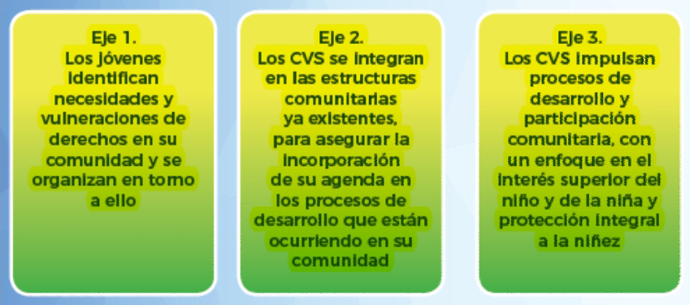

Recopilar información con las y los beneficiarios finales; es decir, la información que se refleja en los documentos deben ser construida con las personas que estuvieron involucradas directamente en la implementación de los proyectos, ya sea con las y los beneficiarios y con las y los implementadores.
Redactar de manera sencilla pero con detalles explícitos el contenido de los productos de comunicación, es importante sustentar con información cuantitativa la información cualitativa que se presente.
Rescatar con detalle cualitativos el “antes” y el “después” de las y los beneficiarios, evidenciando el impacto en la vida de las personas que han tenido nuestros programas.
Cumplir con las fechas establecidas, la calidad pasa por cumplir con los tiempos en el que han programado la entrega de los productos de comunicaciones.
Evidenciar datos desagregados por sexo, rangos de edad y etnia.
Redactar rasgos característicos de la situación que queremos comunicar.
Establecer procesos de comunicación fluida con él o la responsable de recibir el producto final de comunicación.

Abordaje de género, desde la óptica del Vínculo Solidario.
A nivel mundial, las niñas y las adolescentes enfrentan con mayor exclusión los retos económicos, sociales y culturales que los varones.
Por ello, la defensa y promoción de los derechos de las mujeres tiene que iniciar con las niñas, quienes han quedado invisibilizadas no sólo en los datos, sino además en el discurso y las acciones de reconocimiento, promoción y en Honduras además de estar expuestas a un contexto de violencia homicida y de abusos sexuales, las niñas también se exponen a las perores formas de trabajo infantil.
¿Cómo haremos el abordaje?
Para asegurar una verdadera implementación del enfoque de género se trabajará en base a la ejecución de “acciones afirmativas” en favor de las niñas y las mujeres, dichas acciones incluyen, pero no se limitan a:
Potenciar la participación equitativa e igualitaria de mujeres y hombres.
Atención y priorización de las necesidades prácticas y estratégicas de las niñas y las mujeres.
Incorporación de modelos de relación y comunicación que reduzca las relaciones desiguales de poder.
Incorporar modelos de socialización no sexistas y no discriminatorios.
El enfoque de género representa una oportunidad para construir nuevos modelos de desarrollo desde la perspectiva del Vínculo Solidario, esto implica un esfuerzo por intervenir a los actores claves que intervienen en el proceso de construcción y consolidación de las desigualdades de género.